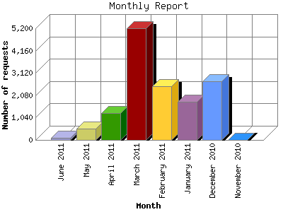

The Monthly Report identifies activity for each month in the report
time frame. Remember that each page hit can result in several server requests
as the images for each page are loaded.
Note: Depending on the
report time frame, the first and last months may not represent a complete
month's worth of data, resulting in lower hits.

| Month | Number of requests | Number of page requests | |
|---|---|---|---|
| 1. | November 2010 | 9 | 5 |
| 2. | December 2010 | 2,740 | 176 |
| 3. | January 2011 | 1,763 | 192 |
| 4. | February 2011 | 2,506 | 155 |
| 5. | March 2011 | 5,189 | 223 |
| 6. | April 2011 | 1,255 | 203 |
| 7. | May 2011 | 535 | 107 |
| 8. | June 2011 | 90 | 38 |
Most active month March 2011 : 223 pages sent. 5,189 requests handled.
Monthly average: 137 pages sent. 1,760 requests handled.
This report was generated on June 9, 2011 10:19.
Report time frame November 29, 2010 18:26 to June 8, 2011 16:52.
| Web statistics report produced by: analog 6.0 / Report Magic 2.21 |